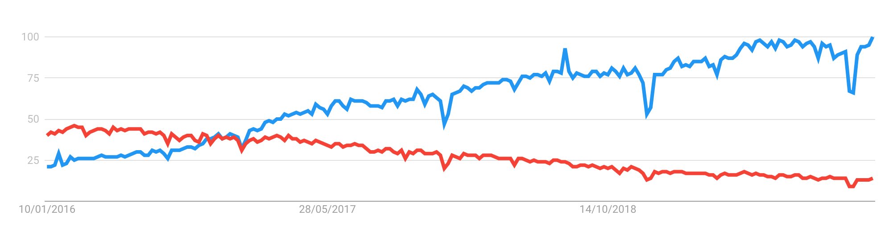

Report page for course DA377B VT20
S01
- Did you before know about the techniques Git, GitHub, Markdown
and/or GitHub Pages?
I have used Git and Git and Github previously in other courses. I've
heard of both Markdown and Github Pages and read about them but never
used them.
- Have you ever created websites before?
Yes but simple ones. I created basic websites on my own using HTML and
CSS.
- Briefly explain your experience and knowledge of web application
development.
As I mentioned before I have some knowledge of HTML and CSS. For
backend I have played around with Node.js and Spring Boot but never
worked on any project, just my own leisure. For the Mobile Development
course project I used PHP and MySQL. In Software Engineering II, I
worked with Java servlets and XML parsing.
- What is your TIL for this course section?
Today I learned how to use Github Pages, fork a Github repo and keep
it updated.
S02
- Have you any previous experience of HTML, CSS and/or
JavaScript?
Yes. I practiced on my own free time with HTML and CSS mostly.
- Explain the role of HTML, CSS and JavaScript in web
development.
HTML stands for Hypertext Markup language and is the standard language
to write documents to be displayed in web browsers.
CSS stands for Cascade Style Sheets and is used to style HTML
documents.
Javascript is a programming language that can be used for both front
and backend web development. It allows for dynamic content, for
example handling events or creating/modifying elements in a webpage.
- Have you any previous experience of HTML, CSS and/or
JavaScript?
Yes. I practiced on my own free time with HTML and CSS mostly.
- Give a brief explanation of how the browser, the HTTP protocol
and the web server interacts.
The browser's function is to display webpages in a human readable
format. In order to do so, it contacts a web server where HTML
documents are kept. The communication between them is made using the
HTTP protocol.
When a browser needs to load a web page, that is not cached locally,
it sents a HTTP GET request to the page's web server, if the request
is successful the web server will reply back with the needed HTML
document and the web browser can then display the webpage.
- What is your TIL for this course section?
For this section I mostly learned CSS related content. I read about
using Flexbox in CSS in order to position elements in HTML pages and
used that knowledge to complete the assignment. I had dificulties
keeping the footer always at the bottom of the pages, but with help
from Flexbox tutorials I was able to do it.
S03
- Do you have any previous experience of client side
JavaScript?
No.
- Can you compare and relate the JavaScript language to any other
language you know?
The language I'm most confortable is Java, from what I've used so from
JavaScript I see similarities but it takes me longer to "read" and
understand it. Declaring variables in JavaScript with "var" takes me
longer to figure out what's going on.
Also testing for equality is different, first time I heard of "triple
equals".
- Describe how you worked with the coding exercise, what grade do
you aim for and how did your code turn out to be?
I aimed for grade 5. I decided to work with one area from start to end
and only when done I would move to the next. I started with the duck,
then moved to the schools and then the flags.
I tried my best to organize my code, I think the js code is looking
easy to follow. Perhaps the CSS side could be better specially for the
flags because I ended wrapping divs in divs.
- What is your TIL for this course section?
For this section I mostly learned JavaScript and CSS related content.
Learned how to manipulate HTML pages with JavaScript, learned about
the fetch API and create CSS transitions.
S04
- Tell me about your previous experience on node/npm or any equal
programming tools.
I've played around with it before but my experience is very limited.
- How do you feel about working with JavaScript, Node and
Express?
It's not easy, especially because we have to learn all this in a short
period of time. Express seems to help with the speed one takes to
setup a webpage, but at the same time it feels like I might be
skipping basic ground knowledge.
- Describe how you worked with the coding exercise, what grade do
you aim for and how did your code turn out to be?
I gradually worked my way up from grade 3, 4 to 5. I tried to organize
the code best I could, but I'm not so happy with how it turned out. To
render the lotto tables I ended repeating code and I guess it could be
done better.
- What is your TIL for this course section?
Express and ejs was totally new to me, so that was a first. I learned
about routing and how to render js pages.
S05
- How do you feel about PHP as a programming language?
PHP seems to have a background history of not being an object oriented
language. When looking up for code examples there's still a lot of
information not using an OO approach, this makes it a bit confusing to
structure code.
- Can you compare PHP to other languages you know?
As I was saying before, PHP is not always used following an OO
methodology. Also it's syntax is quite different from what I was used
to, but not necessarly hard to follow.
- Describe how you took on the coding exercise, what grade did you
aim for and are you satisfied with the result?
I gradually worked my way up from grade 3, 4 to 5. I watched some
tutorials, I tried to organize the code best I could, using Object
Oriented approach, creating a database class. I'm happy with my code
although I was a bit confused for grade 5 in the read.php file how to
organize the links.
- What is your TIL for this course section?
I learned a lot of PHP, combining PHP and HTML, connecting PHP to a
MySQL database and use CRUD operations.
S06
- What is your own opinion on popularity of programming languages
and what are your thoughts of future popularity among programming
languages?
Popularity of programming languages is something to take in
consideration when deciding which languages to learn for whatever area
you are interested in, as well as specific frameworks. For example, if
one is looking at web development it’s a good idea to know what’s
popular in order to decide a learning path. At the end of the day, a
programming language is a tool used for reaching an objective but if
one decides to learn an unpopular language then one might risk not
finding related jobs or at least struggle a bit more. On the other
side, knowing an unpopular language might also be an advantage in case
there’s actually companies looking for that skillset, since not so
many people actually know that programming language. In my opinion
future popularity of languages will depend on future trends and the
language support for them, for example Machine Learning.
- What will be your own choice for selecting future programming
languages?
That would always depend on what the project is. If talking about web
development, I'm not fond of PHP and at the same time Javascript or C#
are languages that I prefer, as well as more popular, so that's where
my choice would go.
- Do your own investigation on https://trends.google.com (Links to
an external site.) to customize your own comparison on programming
languages (or frameworks) and elaborate on the results.
I decided to make my comparison between two frontend Javascript
frameworks: React and AngularJS. The results are available below
(React - blue; AngularJS - red). One can see that AngularJS used to be
more popular that React, but around the end of October 2016 the trend
inverted. Since then React has continously gained popularity while
AngularJS has been losing it.

- If you were to recommend a language/framework/technology to your
potential employer and your next large project, what would it be and
how would you “sell it”?
I think at the moment in my position I wouldn't be able to recommend
anything due to my level of experience. Assuming I would,
nevertheless, it would have to be a language/framework/technology that
I was confortable with (and/or more people in the team). It would
probably be something popular, so it could be "sold" easier. Showing
the manager others use it, could help. In addition, it is important to
point out strenghts of using that technology to others.
- What is your TIL for this course section?
I learned many new framework names. While it is difficult to master
all of them, it's important to stay updated with trends and assess if
it is needed to learn a new technology or not. Also, first time I used
Google Trends.
S07
- Try to explain the platform .NET (C#, ASP.NET) to a skilled
programmer, but newbie to this Microsoft technology.
.NET is a Microsoft framework where you can develop all kinds of applications for all kind of devices. You can use C#, which is similar to Java, as well as F# or Visual Basic. There’s a lot of online documentation. It tries to provide a consistent OOP environment.
- Elaborate by comparing .NET technologies with the other technologies we learned during the course.
.NET seems to be a pretty large and complete technology compared to others we’ve seen in the course. It’s also the one I felt like there’s a steeper learning curve, because of how all its components interact. There’s a lot of documentation, but also a lot of outdated information. It looks like a lot changed with .NET Core 3.0 so it’s hard for someone new to this finding information you can follow along. The project templates are there to help setting up things quickly, but depending which project you choose, your approach might have to be different to what you are reading in the documentation.
- Describe how you took on the coding exercise, what grade did you aim for and are you satisfied with the result?
I aimed for grade 5. I started by doing everything related to the console app and then moved on the the webapp. I didn’t particularly liked having the webapp and the webapi together in the same project, I think ideally these two should be separated, but nevertheless the difficulties to “glue” everything together I’m happy with the result. I feel like there’s much more to grasp with ASP .NET than the little I know, but I’m glad I was able to complete the assignment and I’m satisfied with the result.
- What is your TIL for this course section?
I learned quite a lot, but feel like there’s much more to learn though. I was already familiar with C#, but not with ASP .NET, so that was all knew for me. Additionally, I played around with Bootstrap for the first time.
S08
Authors:
Ahmad Abdulal, Nawar Aghi, Nuno Cunha
Web performance is measured by the needed time to fully load a website/page. It is important to improve any website loading performance because users tend to use websites with high performance more than the ones with low performance. The three selected websites are used by students at Kristianstad University. Down below overall scores can be found. These scores are collected with the Devtools network tab, PageSpeed Insights and Lighthouse Audits-tools. The detailed version can be accessed here.
| hkr.se | hkr.instructure.com | kristianstad.se | |
|---|---|---|---|
| Performance | 44 | 34 | 47 |
| Accessibility | 85 | 97 | 90 |
| Best practice | 86 | 79 | 64 |
| Search engine optimization | 100 | 89 | 90 |
An overall analysis concludes common improvements such as:
- What is your TIL for this course section?
Website performance is a topic that I had previously thought of as an important topic to look at and understand how one can analize it. Nevertheless, this was the first time I analized websites performance's. I learned about Devtools network tab, PageSpeed Insights and Lighthouse audit tools.
S09
Here is the text for this section.
S10
Here is the text for this section.